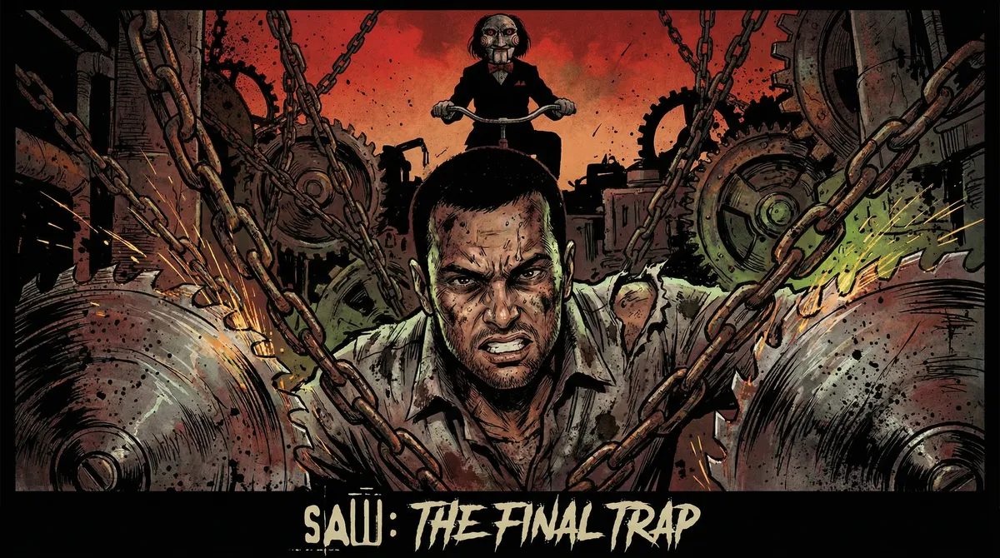
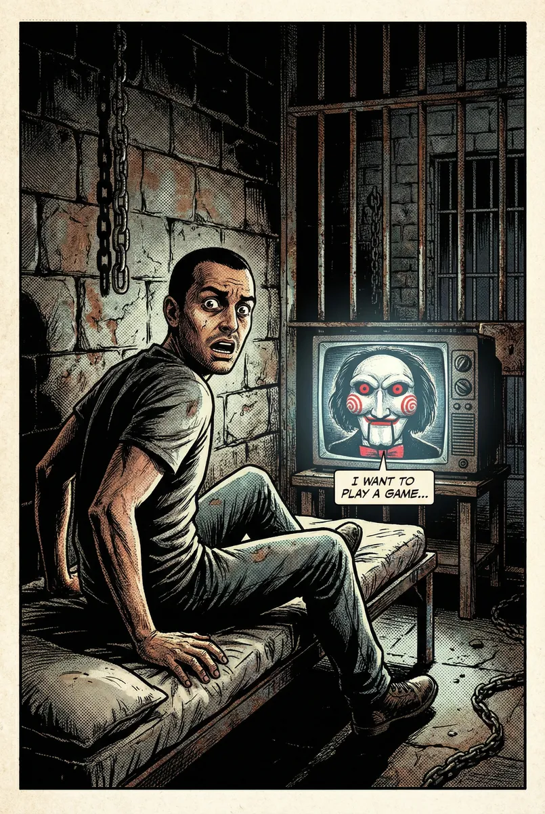
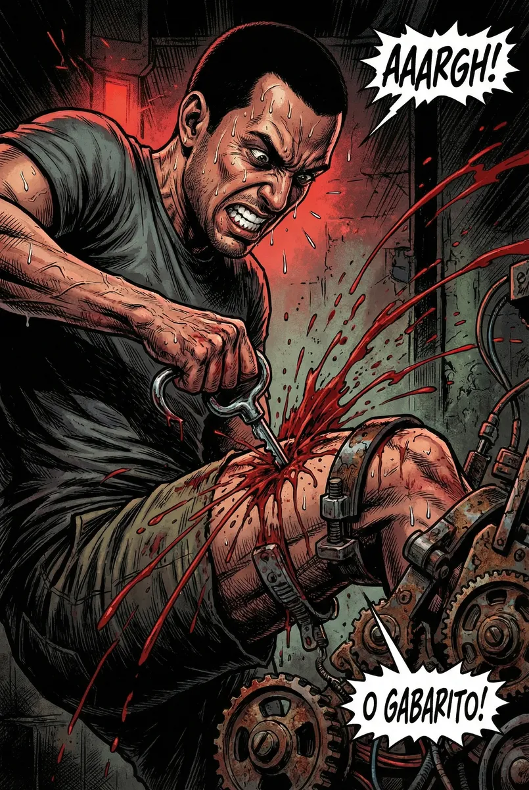
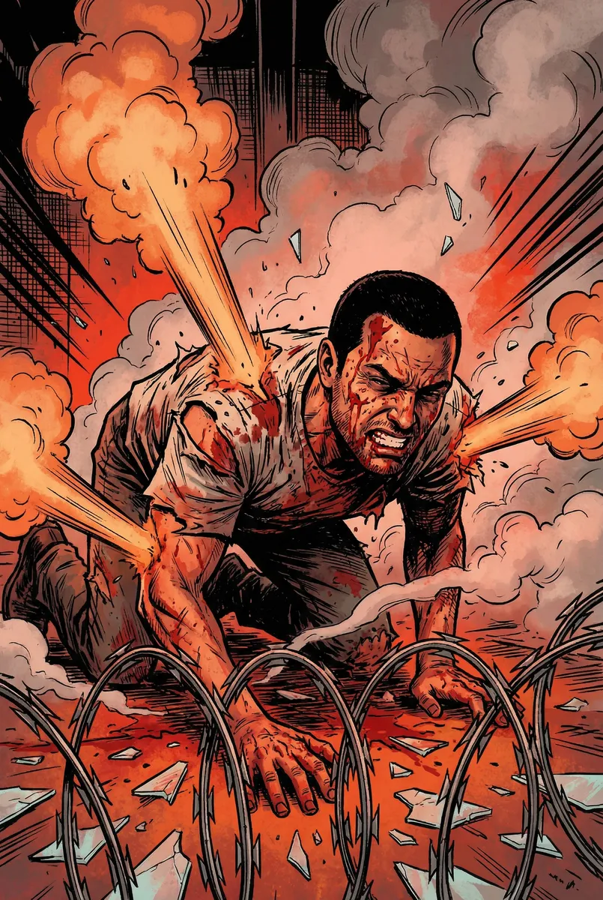
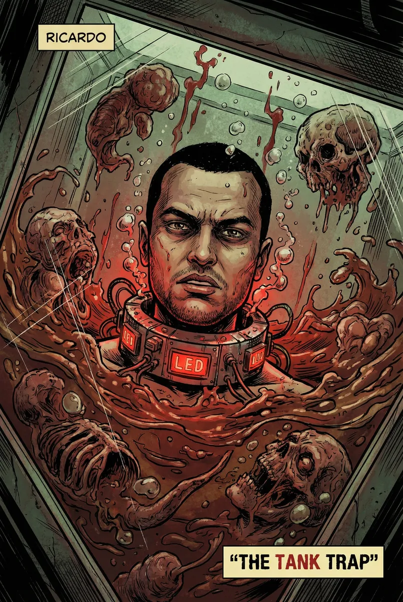
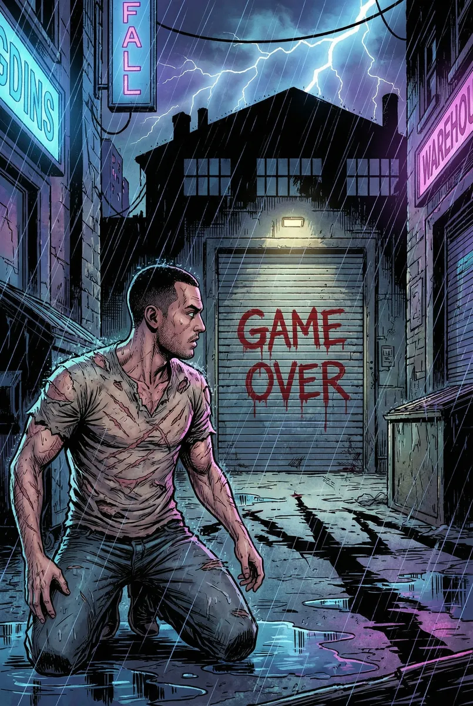

Ricardo: O Labirinto de Carne e Engrenagens

Protagonizado por Ricardo
Capítulo 1
Ricardo desperta em um cubículo de concreto, o cheiro de ozônio e sangue é insuportável. Uma tela de TV estática pisca, revelando o boneco Billy sobre um triciclo. A voz distorcida anuncia que Ricardo sempre valorizou o tempo dos outros acima de sua própria vida, e agora, cada segundo custará sangue. As correntes em seus pulsos começam a puxá-lo em direção a uma parede de pregos.
Prompt: American comic book style, Ricardo waking up in a dark cell, Billy the puppet on a TV screen, heavy ink lines, dramatic lighting, rust and grime textures, focus on his terrified expression.

Capítulo 2
As correntes se apertam e o cronômetro inicia. No centro da sala, uma armadilha de mandíbulas de aço está conectada ao seu tórax por cabos de aço. Para abrir a trava, ele deve usar um gancho para puxar a chave que foi cirurgicamente inserida em sua própria coxa. O sangue jorra enquanto o metal rasga o músculo e ele grita de agonia enquanto alcança o objeto metálico.
Prompt: Visceral comic book art, Ricardo extracting a key from his leg with a hook, blood spraying, heavy shadows, intense expression of pain, mechanical trap details, vivid red colors.

Capítulo 3
Livre da primeira armadilha, Ricardo entra em um corredor repleto de fios de navalha cruzados. O chão é coberto de sal e cacos de vidro. Ele precisa rastejar através do labirinto cortante enquanto jatos de vapor escaldante disparam das paredes, cozinhando sua pele viva. Cada movimento é uma sinfonia de dor e cortes profundos que expõem o tecido muscular.
Prompt: Comic book panel style, Ricardo crawling through razor wire and broken glass, steam vents exploding, vivid red and orange colors, gore details, gritty texture, dynamic action lines.

Capítulo 4
A prova final surge: um tanque de vidro se enchendo rapidamente de restos de matadouro liquefeitos e carcaças. Ricardo está submerso, preso por um colar cervical explosivo. A única forma de desativar a bomba é encontrar um fusível metálico escondido no fundo do tanque, mergulhando na podridão visceral enquanto o cronômetro ruge os últimos dez segundos.
Prompt: Hyper-detailed comic book illustration, Ricardo underwater in a tank of visceral fluid, explosive collar glowing red, bubbles and blood, dramatic perspective from inside the tank, disgusting anatomical details.

Capítulo 5
O mecanismo trava e o colar cai no momento em que a contagem chega a zero. Ricardo arromba a porta final, caindo de joelhos no asfalto frio de um beco escuro sob a chuva. Ele respira o ar da noite, coberto de cicatrizes e trauma, mas vivo. Atrás dele, a porta de aço se fecha violentamente e o sussurro final de Jigsaw ecoa: 'Viver ou morrer, a escolha foi sua. Fim de jogo.'
Prompt: Wide shot comic book style, Ricardo kneeling in a rainy alley, silhouette of the warehouse behind him, dramatic blue and purple lighting, 'Game Over' written in blood on the closing door, scars visible on his body.
